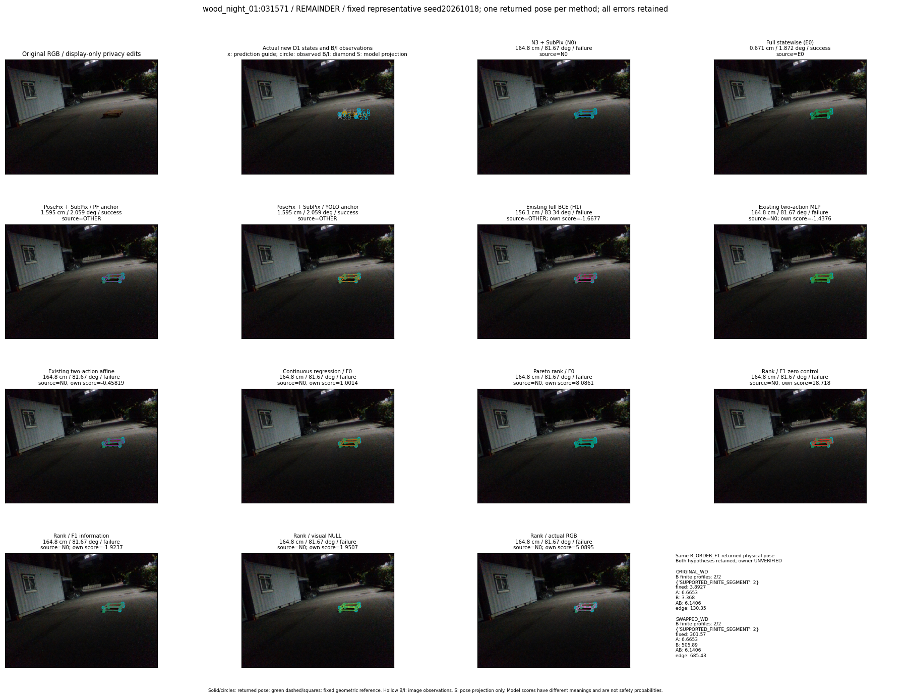
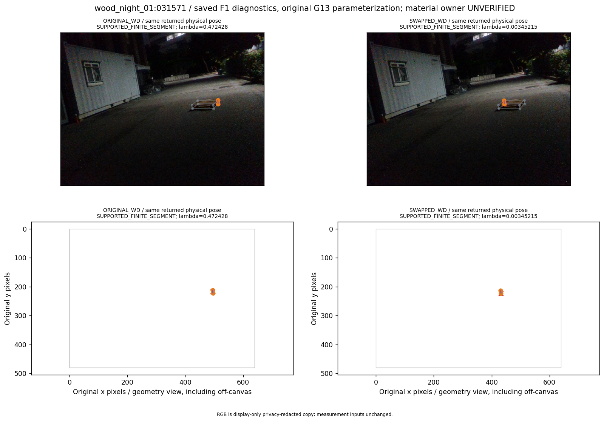
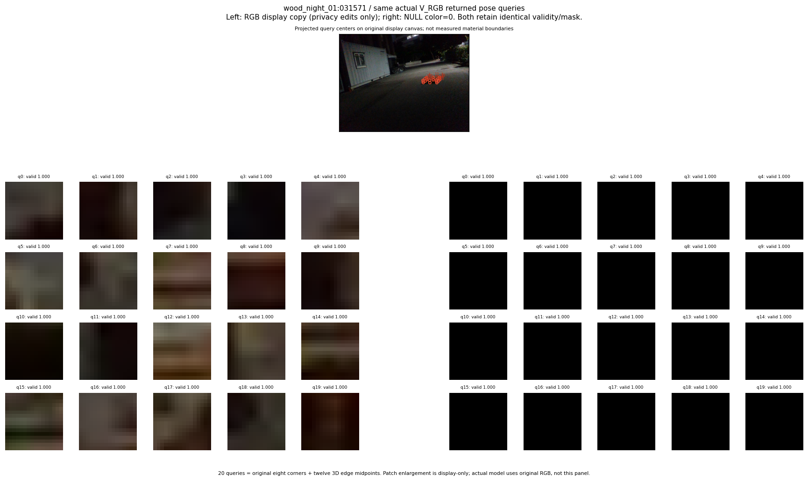

R_CONT_F0_s20261018:translation_worsening · R_ORDER_F0_s20261018:translation_worsening · R_ORDER_F1_ZERO_s20261018:translation_worsening · R_ORDER_F1_s20261018:translation_worsening · V_ORDER_NULL_s20261018:translation_worsening · V_ORDER_RGB_s20261018:translation_worsening
thumbnail detail support visual



실선은 반환 자세, 초록 점선은 고정 기하 참조입니다. S는 영상 관측이 아닙니다. 점수는 모델별 의미가 다르며 보정된 안전 확률이 아닙니다. 개인정보 처리는 표시 사본에만 적용했습니다.
| 방법·seed | 위치 / 회전 / 공동성공 | 실제 출처 | 선택 후보 | 각 모델 자체 점수 |
|---|---|---|---|---|
| N0 | 164.8 cm / 81.67 deg / failure | N0 | N/A | N/A |
| E0 | 0.671 cm / 1.872 deg / success | E0 | N/A | N/A |
| E0_REGENERATED | 0.671 cm / 1.872 deg / success | E0 | E0_REGENERATED | N/A |
| POSEFIX_SUBPIX_PF_ANCHOR | 1.595 cm / 2.059 deg / success | OTHER | N/A | N/A |
| POSEFIX_SUBPIX_YOLO_ANCHOR | 1.595 cm / 2.059 deg / success | OTHER | N/A | N/A |
| D1_H1_MLP_s20261018 | 156.1 cm / 83.34 deg / failure | OTHER | WD0/ORIGINAL_WD/selected | -1.6676656007766724 |
| D1_H1_MLP_s20261019 | 156.1 cm / 83.34 deg / failure | OTHER | WD0/ORIGINAL_WD/selected | -1.7364997863769531 |
| D1_H1_MLP_s20261020 | 156.1 cm / 83.34 deg / failure | OTHER | WD0/ORIGINAL_WD/selected | -1.4127178192138672 |
| D1_H1_PAIR_MLP_s20261018 | 164.8 cm / 81.67 deg / failure | N0 | N0 | -1.43755304813385 |
| D1_H1_PAIR_MLP_s20261019 | 164.8 cm / 81.67 deg / failure | N0 | N0 | -1.7934064865112305 |
| D1_H1_PAIR_MLP_s20261020 | 164.8 cm / 81.67 deg / failure | N0 | N0 | -2.1536684036254883 |
| D1_H1_PAIR_ROLE_AFFINE_s20261018 | 164.8 cm / 81.67 deg / failure | N0 | N0 | -0.458191841840744 |
| D1_H1_PAIR_ROLE_AFFINE_s20261019 | 164.8 cm / 81.67 deg / failure | N0 | N0 | -1.1526265144348145 |
| D1_H1_PAIR_ROLE_AFFINE_s20261020 | 164.8 cm / 81.67 deg / failure | N0 | N0 | -0.5591109991073608 |
| R_CONT_F0_s20261018 | 164.8 cm / 81.67 deg / failure | N0 | N0 | 1.0014023780822754 |
| R_CONT_F0_s20261019 | 164.8 cm / 81.67 deg / failure | N0 | N0 | 1.156524896621704 |
| R_CONT_F0_s20261020 | 164.8 cm / 81.67 deg / failure | N0 | N0 | 0.9653067588806152 |
| R_ORDER_F0_s20261018 | 164.8 cm / 81.67 deg / failure | N0 | N0 | 8.086052894592285 |
| R_ORDER_F0_s20261019 | 164.8 cm / 81.67 deg / failure | N0 | N0 | 9.792245864868164 |
| R_ORDER_F0_s20261020 | 164.8 cm / 81.67 deg / failure | N0 | N0 | -1.5651732683181763 |
| R_ORDER_F1_ZERO_s20261018 | 164.8 cm / 81.67 deg / failure | N0 | N0 | 18.71836280822754 |
| R_ORDER_F1_ZERO_s20261019 | 164.8 cm / 81.67 deg / failure | N0 | N0 | 16.12523651123047 |
| R_ORDER_F1_ZERO_s20261020 | 164.8 cm / 81.67 deg / failure | N0 | N0 | 14.517793655395508 |
| R_ORDER_F1_s20261018 | 164.8 cm / 81.67 deg / failure | N0 | N0 | -1.923661470413208 |
| R_ORDER_F1_s20261019 | 164.8 cm / 81.67 deg / failure | N0 | N0 | 4.44553804397583 |
| R_ORDER_F1_s20261020 | 164.8 cm / 81.67 deg / failure | N0 | N0 | 4.013599395751953 |
| V_ORDER_NULL_s20261018 | 164.8 cm / 81.67 deg / failure | N0 | N0 | 1.9507486820220947 |
| V_ORDER_NULL_s20261019 | 164.8 cm / 81.67 deg / failure | N0 | N0 | 1.9355610609054565 |
| V_ORDER_NULL_s20261020 | 164.8 cm / 81.67 deg / failure | N0 | N0 | 3.45544695854187 |
| V_ORDER_RGB_s20261018 | 164.8 cm / 81.67 deg / failure | N0 | N0 | 5.089499473571777 |
| V_ORDER_RGB_s20261019 | 164.8 cm / 81.67 deg / failure | N0 | N0 | 1.1907709836959839 |
| V_ORDER_RGB_s20261020 | 164.8 cm / 81.67 deg / failure | N0 | N0 | -5.55134391784668 |